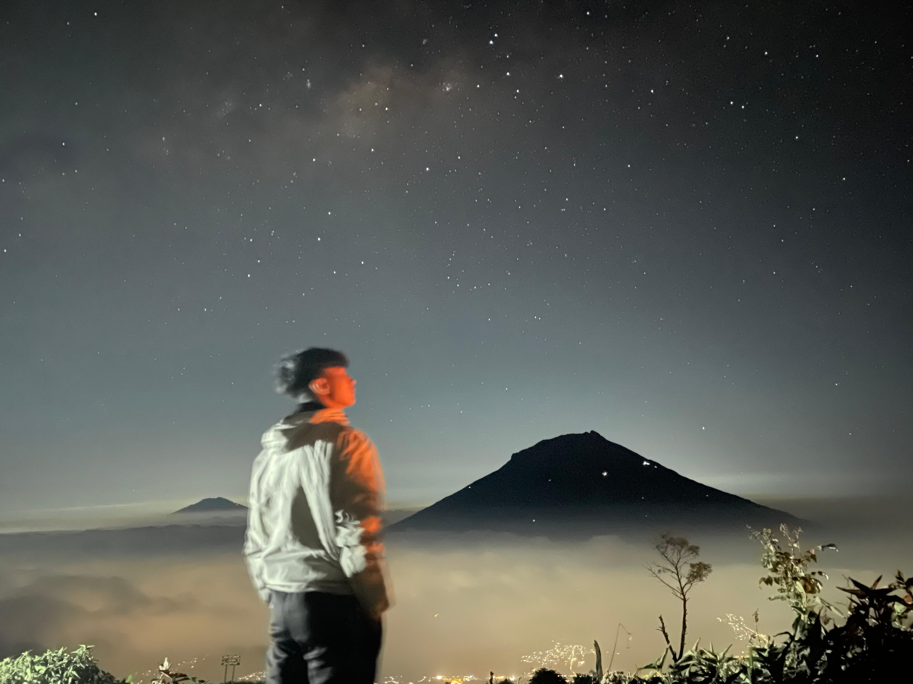

MY TRAVEL JOURNEY
"Perjalanan bukan hanya tentang mengunjungi tempat baru, tetapi juga tentang menikmati suasana, melihat keindahan alam, dan mendapatkan pengalaman yang tidak terlupakan."
History TripsABOUT MY HOBBY

Gunung Sindoro
Travelling merupakan salah satu kegiatan yang paling saya sukai. Bagi saya, perjalanan bukan hanya tentang mengunjungi tempat baru, tetapi juga tentang menikmati suasana, melihat keindahan alam, dan mendapatkan pengalaman yang tidak bisa ditemukan dalam kehidupan sehari-hari.
Saya lebih senang menghabiskan waktu di tempat-tempat yang memiliki pemandangan alam seperti pegunungan, pantai, air terjun, dan perbukitan.
Saya percaya bahwa setiap perjalanan memiliki cerita, dan setiap tempat yang dikunjungi selalu memberikan pengalaman baru.
Karena itu, saya selalu menikmati setiap perjalanan yang saya lakukan, baik bersama teman, keluarga, maupun sendiri.
Saya juga suka mengabadikan momen selama perjalanan melalui foto dan video. Menurut saya, sebuah foto dan video dapat menjadi pengingat akan pengalaman dan cerita yang pernah dilalui.
Connect With MeSOME OF MY TRIPS
Ada beberapa tempat yang sudah saya kunjungi, terutama tempat-tempat yang menawarkan keindahan alam dan suasana yang berbeda dari keseharian. Saya melihat sendiri apa yang selama ini hanya saya temukan melalui media sosial, merasakan udaranya, mendengar suasananya, dan menikmati setiap perjalanan tanpa terburu-buru.
Magelang, Jawa Tengah.
⛰ MountainSemeru, Jawa Timur
🏔 NatureWonosobo, Provinsi Jawa Tengah
⛰ MountainMY FAVORITE ACTIVITIES
MY DREAM DESTINATIONS
| Nama Tempat | Aktivitas | Alasan |
|---|---|---|
| Switzerland | Hiking dan Camping | Mengelilingi alam yang indah |
| Gunung Rinjani | Hiking dan Camping | Menikmati indahnya Danau Sagara Anak |